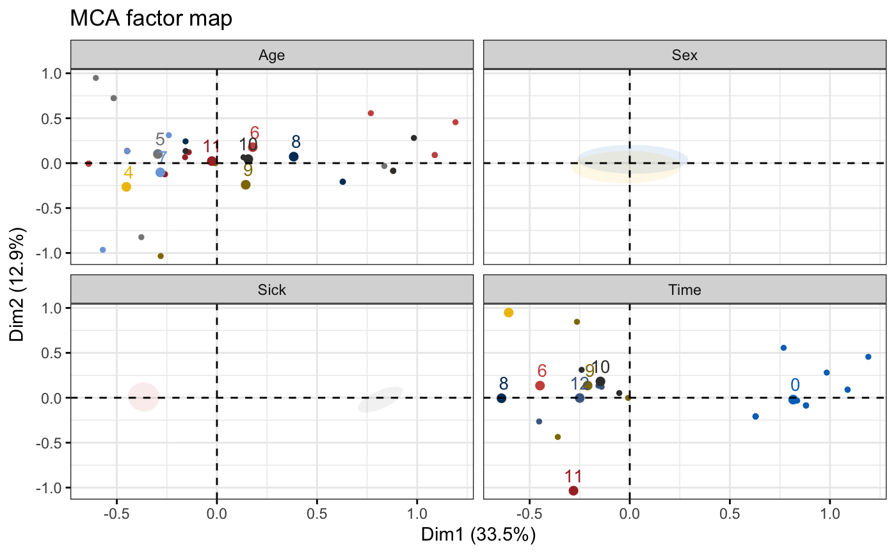

Draw confidence ellipses around the categories
an object of class MCA, PCA or MFA.
a numeric vector of indexes of variables or a character vector of names of variables. Can be also a data frame containing grouping variables.
a numeric vector specifying the axes of interest. Default values are 1:2 for axes 1 and 2.
logical value. If TRUE, draws ellipses around the individuals when habillage != "none".
Character specifying frame type. Possible values are
"convex", "confidence" or types supported by
stat_ellipse() including one of c("t", "norm",
"euclid") for plotting concentration ellipses.
"convex": plot convex hull of a set of points.
"confidence": plot confidence ellipses around group mean points as
coord.ellipse()[in FactoMineR].
"t":
assumes a multivariate t-distribution.
"norm": assumes a
multivariate normal distribution.
"euclid": draws a circle with
the radius equal to level, representing the euclidean distance from the
center. This ellipse probably won't appear circular unless
coord_fixed() is applied.
the color palette to be used for coloring or filling by groups. Allowed values include "grey" for grey color palettes; brewer palettes e.g. "RdBu", "Blues", ...; or custom color palette e.g. c("blue", "red"); and scientific journal palettes from ggsci R package, e.g.: "npg", "aaas", "lancet", "jco", "ucscgb", "uchicago", "simpsons" and "rickandmorty". Can be also a numeric vector of length(groups); in this case a basic color palette is created using the function palette.
the size of points
a text specifying the geometry to be used for the graph. Allowed values are the combination of c("point", "text"). Use "point" (to show only points); "text" to show only labels; c("point", "text") to show both types.
function, ggplot2 theme name. Default value is theme_pubr(). Allowed values include ggplot2 official themes: theme_gray(), theme_bw(), theme_minimal(), theme_classic(), theme_void(), ....
Arguments to be passed to the functions ggpubr::ggscatter() & ggpubr::ggpar().
a ggplot
# \donttest{
# Multiple Correspondence Analysis
# +++++++++++++++++++++++++++++++++
library(FactoMineR)
data(poison)
res.mca <- MCA(poison, quanti.sup = 1:2,
quali.sup = 3:4, graph=FALSE)
fviz_ellipses(res.mca, 1:4, geom = "point",
palette = "jco")
#> Warning: Computation failed in `stat_conf_ellipse()`.
#> Caused by error in `if (scale[1] > 0) ...`:
#> ! missing value where TRUE/FALSE needed
#> Warning: Computation failed in `stat_conf_ellipse()`.
#> Caused by error in `if (scale[1] > 0) ...`:
#> ! missing value where TRUE/FALSE needed
#> Warning: This manual palette can handle a maximum of 10 values. You have supplied 32
#> Warning: Removed 144 rows containing missing values or values outside the scale range
#> (`geom_point()`).
#> Warning: Removed 22 rows containing missing values or values outside the scale range
#> (`geom_point()`).

# }